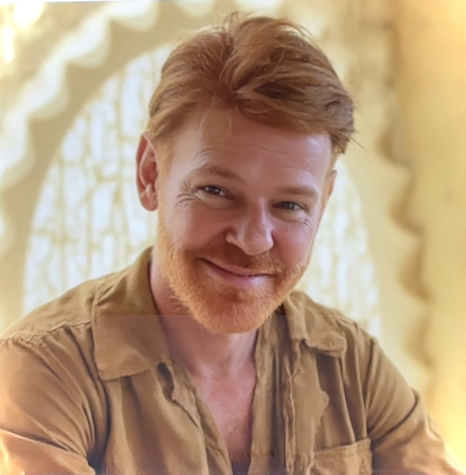
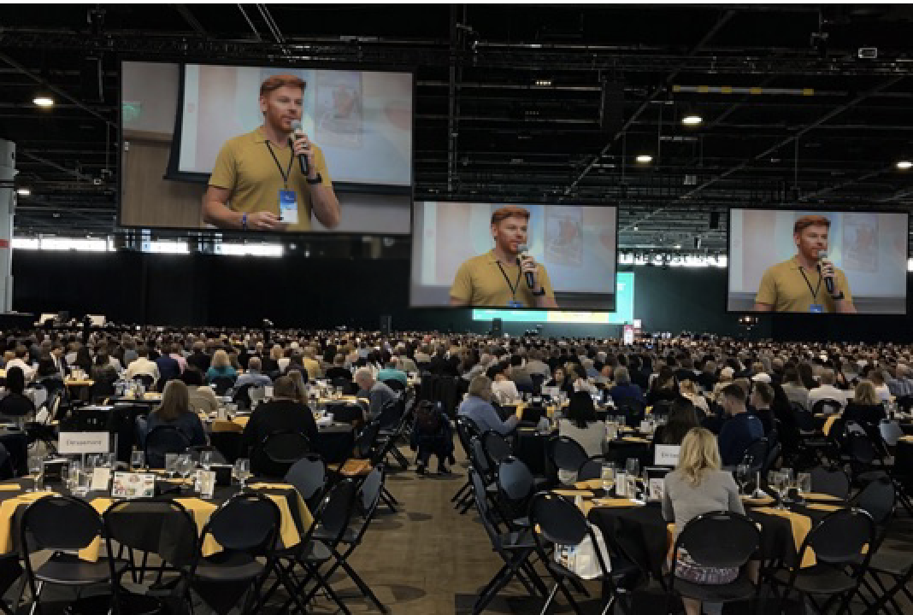

从内容到真实旅行
这是一条更适合中文用户的理解路径
在这里，视频不是终点，而是你理解巴西、理解目的地、再进入规划层的第一步。
先看内容
通过视频先感受巴西的尺度、气氛、节奏与真实现场，而不是直接进入冷冰冰的搜索。
先理解语境
巴西并不是一个单一目的地。不同城市、地区与旅行方式，体验差异很大。
再进入规划
当你已经知道自己想靠近什么，再去看机票、酒店、体验与准备工具，效率会高很多。
按你的方式进入
先建立兴趣，再进入决定
你可以从巴西内容、第一次去巴西、工具层，或巴西–中国项目视角切入，而不是被迫直接选择一个城市。


内容 + 语境 + 方向
这几条路径最适合作为中文用户的第一入口
这不是把 PT/EN 页面直接翻译过来，而是更贴近中国用户理解巴西、理解 Lipe Travel Show 的方式。

巴西内容入口
如果你想先用中文理解巴西的内容脉络，这里是最自然的第一步。
从视频、叙事与计划线索一起进入，而不是只看一个单点城市。
进入巴西专题
Lipe 是谁
理解这个站点之前，也值得先理解 Lipe 的背景、经验和为什么他的旅行内容不只是“攻略”。
这会帮助你读懂网站背后的判断力与方法。
了解 Lipe
巴西–中国特别项目
如果你希望从更国际化的维度理解 Lipe Travel Show，这一页提供了更宏观的背景。
内容不只服务游客，也连接品牌、机构与国际项目。
查看特别项目
品牌与合作
对中国品牌、机构或合作伙伴而言，这一页解释了如何与 Lipe Travel Show 开展项目。
如果你从内容走向合作，这里就是下一层。
查看合作工具层
当方向更清楚时，再进入这些工具
这页的重点不是立刻让你购买，而是先帮助你理解巴西；但当你准备更进一步时，这些工具就会变得有用。
这页的方法
先建立对巴西的理解，再进入旅行的执行层
面向中文用户，这页的核心不是把你立刻推进搜索，而是先帮你读懂巴西内容、读懂 Lipe 的视角，再更自然地进入旅行准备。
1. 内容
先通过视频与编辑视角感受巴西，而不是只看参数和清单。
先通过视频与编辑视角感受巴西，而不是只看参数和清单。
2. 语境
理解城市、项目、国际连接与旅行方式，判断什么最适合你。
理解城市、项目、国际连接与旅行方式，判断什么最适合你。
3. 规划
只有在方向更清楚之后，机票、酒店、体验与保险才真正有意义。
只有在方向更清楚之后，机票、酒店、体验与保险才真正有意义。
微信联系
通过微信继续沟通
如果你想讨论巴西旅行、特别项目、品牌合作或更个性化的建议，也可以直接通过微信联系我。

请在微信内扫码添加联系人
关注 Lipe Travel Show
在所有平台继续探索
长视频、短内容、市场视角与编辑型旅行内容，构成完整的 Lipe Travel Show 生态。